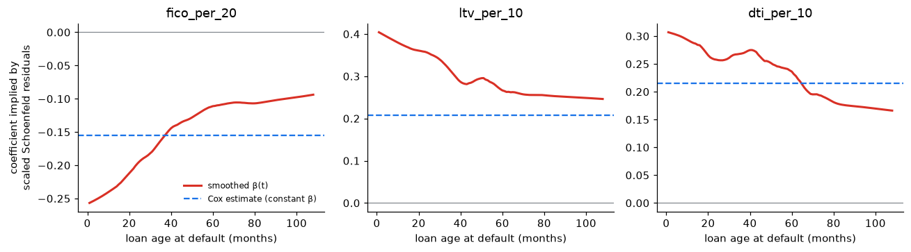

3. A Cox model for default: borrowers versus environment
Notebook 2 showed that, within every credit-score band, 2006 loans defaulted 3 to 5 times more often than 2017 loans. A regression model adjusts for all borrower characteristics at once and asks: for two loans with the same profile, how much riskier was the 2006 one?
Because prepayment competes with default, the model is a cause-specific Cox model: it describes the hazard of default among loans still running, and prepaid loans are censored at prepayment. (That is correct for the hazard; probabilities of default still require the competing-risks machinery of notebook 2.)
import syssys.path.insert(0, "../src")import warningswarnings.filterwarnings("ignore")import matplotlib.pyplot as pltimport numpy as npimport pandas as pdfrom lifelines import CoxPHFitterfrom lifelines.statistics import proportional_hazard_testfrom lifelines.utils import concordance_indexfrom credit_risk.data import load_loansfrom credit_risk.survival import cumulative_incidencepd.set_option("display.precision", 3)plt.rcParams.update({"figure.dpi": 110, "axes.spines.top": False, "axes.spines.right": False})BLUE, RED, GREY ="#1a73e8", "#d93025", "#80868b"loans = load_loans((2006, 2017)).dropna(subset=["fico", "ltv", "dti", "rate"])# Covariates on interpretable scales. The interest rate is expressed as the premium over the# median rate of loans originated the same year: rates fell from ~6.4% to ~4.2% between the two# vintages for reasons unrelated to the borrower, while the premium reflects the lender's view of risk.X = pd.DataFrame({"fico_per_20": (loans["fico"] -740) /20,"ltv_per_10": (loans["ltv"] -75) /10,"dti_per_10": (loans["dti"] -35) /10,"rate_premium": loans["rate"] - loans.groupby("vintage")["rate"].transform("median"),"investor": (loans["occupancy"] =="I").astype(int),"cash_out_refi": (loans["purpose"] =="C").astype(int),"first_time_buyer": (loans["first_time_buyer"] =="Y").astype(int),"single_borrower": (loans["n_borrowers"] ==1).astype(int),"vintage_2006": (loans["vintage"] ==2006).astype(int),"time": loans["time"],"default": (loans["event"] ==1).astype(int),"vintage": loans["vintage"],})len(X)
Credit score: every 20 FICO points lower multiplies the default hazard by about 1.17 (= 1 / 0.857).
Loan-to-value and debt-to-income: more leverage, more risk.
Rate premium: loans priced above their year’s typical rate carried risk the lender saw and the other variables do not capture.
Investor properties: a hazard ratio below 1 looks surprising, but it is conditional on everything else, including the rate premium: lenders charge investors more and demand more equity, so the remaining risk is lower. A coefficient is an effect given the other variables, not a stand-alone fact.
Vintage 2006: even after adjusting for everything above, a 2006 loan had several times the default hazard of an identical 2017 loan. That is the environment: the collapse in house prices that left borrowers owing more than their homes were worth.
Checking the proportional-hazards assumption
The Cox model assumes each hazard ratio is constant over the life of the loan. With 100,000 loans, a formal test will flag tiny departures, so the test statistic matters more than the p-value: which variables violate the assumption most?
The largest violation is the credit score: a score measured at origination says less and less about the borrower as the years pass (incomes, debts and house prices change), so its effect fades with loan age. The vintage effect also varies over time, because the crisis struck at a specific calendar date. A single hazard ratio averages effects that change over the life of the loan. We estimate both separately by loan age, refitting the model on loans still at risk at the start of each period (left truncation):
def hr_vintage_in_window(start, end): w = X[X["time"] > start].copy() w["entry"] = start w["default"] = ((w["default"] ==1) & (w["time"] <= end)).astype(int) w["time"] = w["time"].clip(upper=end) m = CoxPHFitter().fit(w.drop(columns="vintage"), duration_col="time", event_col="default", entry_col="entry") s = m.summaryreturn {"loan age (months)": f"{start +1}–{end}","HR vintage 2006 vs 2017": s.loc["vintage_2006", "exp(coef)"],"95% CI vintage": f"{s.loc['vintage_2006', 'exp(coef) lower 95%']:.2f}–{s.loc['vintage_2006', 'exp(coef) upper 95%']:.2f}","HR per 20 FICO points": s.loc["fico_per_20", "exp(coef)"],"defaults in window": int(w["default"].sum())}windows = pd.DataFrame([hr_vintage_in_window(a, b) for a, b in [(0, 24), (24, 48), (48, 72), (72, 108)]])windows
loan age (months)
HR vintage 2006 vs 2017
95% CI vintage
HR per 20 FICO points
defaults in window
0
1–24
3.150
2.80–3.54
0.807
2055
1
25–48
6.574
5.84–7.40
0.853
3095
2
49–72
4.376
3.81–5.02
0.902
1785
3
73–108
4.428
3.74–5.24
0.911
894
Two findings hidden inside the single hazard ratios:
For an otherwise identical loan, being originated in 2006 multiplied the default hazard most in months 25–48 of the loan’s life, which for these loans is 2008–2010, the core of the crisis.
The protective effect of a higher credit score is strongest in the first two years and weakens afterwards (hazard ratio per 20 points moving towards 1).
The proportional-hazards violations are not a nuisance to hide: they are findings. An alternative specification stratifies by vintage (a separate baseline hazard per vintage, shared covariate effects); the borrower effects barely change:
A formal test says whether an assumption fails; residuals show how. The Cox model has several kinds of residuals, each built to check something different:
Residual
Checks
Scaled Schoenfeld
proportional hazards: does a coefficient drift over time?
Martingale
functional form: is a covariate’s effect really linear on the log-hazard scale?
Cox-Snell
overall fit of the model
Deviance
outlying observations
With almost 100,000 loans, scatter plots of individual residuals are an unreadable cloud, so the plots below smooth or bin them.
from statsmodels.nonparametric.smoothers_lowess import lowessmodel_df = X.drop(columns="vintage")schoenfeld = cox.compute_residuals(model_df, kind="scaled_schoenfeld") # one row per defaultevent_times = model_df.loc[schoenfeld.index, "time"]# Only ages where both vintages are still at risk: 2017 loans are observed for at most ~110 months,# so beyond that the risk set is all-2006 and time trends are not comparable.keep = event_times <=108fig, axes = plt.subplots(1, 3, figsize=(12, 3.4))for ax, var inzip(axes, ["fico_per_20", "ltv_per_10", "dti_per_10"]): beta_t = cox.params_[var] + schoenfeld.loc[keep, var] # beta(t) ~ beta + scaled residual smooth = lowess(beta_t, event_times[keep], frac=0.3, return_sorted=True) ax.plot(smooth[:, 0], smooth[:, 1], color=RED, lw=2, label="smoothed β(t)") ax.axhline(cox.params_[var], color=BLUE, ls="--", label="Cox estimate (constant β)") ax.axhline(0, color=GREY, lw=0.8) ax.set_title(var) ax.set_xlabel("loan age at default (months)")axes[0].set_ylabel("coefficient implied by\nscaled Schoenfeld residuals")axes[0].legend(frameon=False, fontsize=8)fig.tight_layout()fig.savefig("../figures/schoenfeld_residuals.png", bbox_inches="tight")plt.show()

Scaled Schoenfeld residuals (Grambsch–Therneau): added to the estimated coefficient, they trace the coefficient as a function of loan age. A flat line means proportional hazards. All three effects weaken as loans age: the credit-score coefficient loses about two thirds of its size (the same weakening seen in the hazard ratios by loan age, now continuously), and loan-to-value and debt-to-income lose about 40%. Information measured at origination ages. (Read the shape of these curves rather than their level: the scaled residuals use a variance averaged over all default times, an approximation that shifts the curves when the mix of loans at risk changes, as it does here between vintages.)
The vintage effect is not plotted: the scaled residuals rely on an approximation that breaks down when the composition of the risk set changes drastically, which is exactly what happens to a vintage indicator (late in time only 2006 loans remain). The hazard ratios by loan-age window above are the reliable view of that effect.
Martingale residuals are observed minus expected defaults for each loan. If a covariate enters the model in the right form, their mean is about zero at every value of that covariate.
Credit score: a clear pattern. Loans with scores around 650–700 default more than the linear term predicts and loans above 750 less: the effect of the score is not linear on the log-hazard scale. A spline or score bands would fit better; with a mean of about 0.08 defaults per loan, deviations of ±0.01–0.02 are not negligible.
Loan-to-value: close to zero except at the lowest values, where defaults are rarer than predicted.
Debt-to-income: flat, except the highest band (above 50%), which defaults less than predicted, plausibly because such loans required compensating strengths to be approved.
These are the refinements a model-development team would make next; the conclusions about the vintage effect do not depend on them (the stratified model and the segmentation of notebook 4 reach the same answer).
Cox-Snell residuals are each loan’s estimated cumulative hazard at its observed time. If the model is right they behave like a censored sample from an exponential distribution with mean 1, so their own cumulative hazard follows the 45° line.
The fit is good for small residuals, where most loans are, but the curve bends below the line: the model overstates the accumulated risk of the loans it considers riskiest. Those are mostly long-lived 2006 loans, for which a single hazard ratio for the vintage, applied over twenty years, is too large once the crisis has passed (the hazard ratios by loan age and the stratified model address this). A model with a time-varying vintage effect would bring the curve closer to the line.
Deviance residuals rescale the martingale residuals to be roughly symmetric, so large absolute values flag loans the model explains poorly (typically a default the model considered very unlikely). Only the counts are shown here: the individual loans are not published.
Validation: does a model built on 2006 work on 2017?
A credit model is used on loans it has never seen, in an economy that may be different. The test that matters is out of time: fit on 2006, evaluate on 2017. Two separate questions:
Discrimination: does it still rank borrowers correctly? (concordance index; 0.5 = coin flip, 1 = perfect)
The ranking transfers almost intact: a model fitted on 2006 sorts 2017 borrowers nearly as well as a model fitted on 2017 itself. Now the level. For each decile of predicted risk in 2017, compare the predicted probability of default within 24 months with what happened (at 24 months prepayment is still small, so the cause-specific and competing-risks probabilities nearly coincide):
fig, ax = plt.subplots(figsize=(7, 4))ax.plot(calib.index, calib["observed"], "o-", color="black", label="observed")ax.plot(calib.index, calib["predicted, model fitted on 2017"], "s--", color=BLUE, label="model fitted on 2017")ax.plot(calib.index, calib["predicted, model fitted on 2006"], "^--", color=RED, label="model fitted on 2006 (out of time)")ax.set_yscale("log")ax.set_xlabel("decile of predicted risk")ax.set_ylabel(f"probability of default within {horizon} months")ax.set_xticks(range(1, 11))ax.legend(frameon=False)ax.set_title("Out-of-time validation: ranking holds, level does not")fig.tight_layout()fig.savefig("../figures/out_of_time_calibration.png", bbox_inches="tight")plt.show()
The model fitted on the crisis vintage ranks 2017 borrowers correctly but overstates their risk several times over. This is the central distinction of credit-model validation: discrimination (who is riskier) is a property of the borrowers and transfers across time; calibration (how risky) depends on the economic cycle and does not. In practice, banks keep the ranking model and recalibrate its level, separating a through-the-cycle probability of default from a point-in-time one.